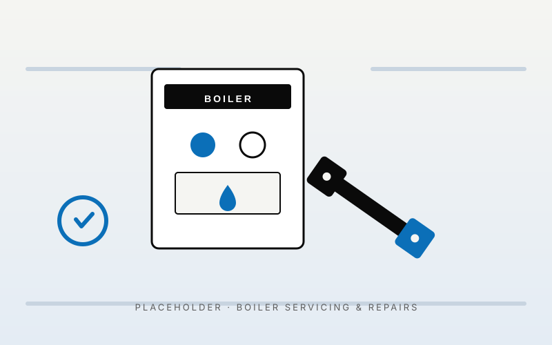

An annual boiler service costs about the same as a takeaway for the family — and it's the single best thing you can do for your heating bills, your warranty, and your safety. Most of the boiler emergencies we get called to in Limerick during a cold snap could have been avoided with a 60-minute service the previous summer. We service every major brand and we can usually be out within 48 hours.
What's included
- Full strip-down clean of the heat exchanger, burner and combustion chamber
- Combustion analysis and flue-gas test using calibrated equipment
- Pressure check and refill if needed
- System water quality test (sludge, inhibitor levels)
- Visual inspection of all gas pipework, flue and condensate run
- Gas tightness test on the meter
- Boiler service report and stamp on your warranty book
- Honest call-out if anything else needs attention — no pressure-selling
Common boiler problems we fix in Limerick homes
After 15 years and a few thousand call-outs in Limerick, the same handful of issues come up again and again. Most are fixable in one visit.
Boiler losing pressure
Usually a leaking radiator valve, expansion vessel issue, or a dripping pressure relief pipe outside the house. Easy to diagnose, usually a same-day fix.
No hot water but heating works (or vice versa)
Almost always a diverter valve. Common on Worcester, Ideal and Vaillant combis around the 7-year mark. Standard part, standard repair.
Boiler kettling / banging noises
Limescale or sludge in the heat exchanger. A descale or power flush usually sorts it. We'll tell you honestly if the boiler is worth saving.
F-codes and lockouts (F22, F28, EA, etc)
Each manufacturer has its own fault codes. We carry the diagnostic tools and most common spares in the van.
Pilot light keeps going out
Older non-condensing boilers — usually a thermocouple. Quick fix if parts are still available.
Frozen condensate pipe
A Limerick winter classic. We thaw it, lag it, and re-route it if it's badly run.
How much does a boiler service cost in Limerick?
Standard annual gas boiler service in Limerick: from €85 (single boiler, off-peak booking). Oil boiler service: from €110 (oil services include a more thorough nozzle and electrode change). Repairs are quoted before we do them — most common faults (diverter valve, expansion vessel, PRV, pump) come out under €280 fitted. We'll never start work without giving you a price first.
Should I service my boiler every year?
Yes — and it's not just plumbers saying that to drum up work. Most manufacturer warranties (Worcester, Vaillant, Ideal) are conditional on annual servicing by a registered engineer. Skip a year and your warranty is technically void. Beyond that: a serviced boiler runs more efficiently (typically 5–8% lower gas usage), is safer (we test for CO leaks every visit), and lasts longer. The maths is in your favour every year.
Frequently asked questions
How long does a boiler service take?
Roughly 45–75 minutes for a gas boiler, 60–90 for oil. We don't rush it — a proper service takes time.
Do you service all boiler brands?
Yes — Worcester Bosch, Ideal, Vaillant, Baxi, Glow-worm, Viessmann, Grant, Firebird, Warmflow, Riello and most others. If you're not sure, send us a photo of the front of the boiler.
My boiler is making a banging noise — is it dangerous?
Usually no, but it's a sign the system needs attention. Kettling noises from limescale are the most common cause. Banging or vibration in the pipework can be air or pump issues. Either way, get it looked at sooner rather than later.
Can you service my boiler if it's still under warranty?
Yes — and you'll need us (or another RGI engineer) to keep that warranty valid. We register every service so the manufacturer has a record.
What if you find something wrong during the service?
We'll tell you what's wrong, what it'll cost to fix, and whether it's urgent or can wait. We never push repairs that aren't needed — most of our work comes from people we treated fairly years ago.
Areas we cover for boiler servicing & repairs
We cover all of Limerick city and county, most of Clare and into north Tipperary. Some popular areas: